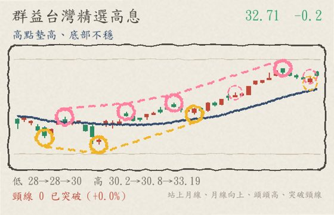
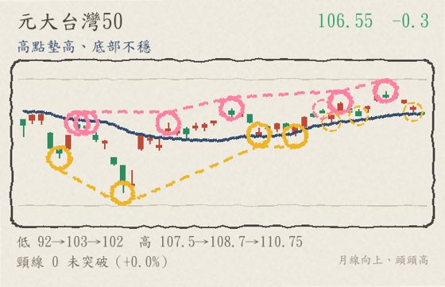

← 回股市觀察
盤中觀察 第一次盤中試作
2026/09/15 12:23 即時快照 · 當日盤中成交金額前 50 檔（上市 35＋上櫃 15）· 公開資料整理
45,749.93
加權指數 -112.59 點（-0.25%）
這是盤中快照，不是收盤結果。資料時間 2026-09-15 12:23:16（TWSE MIS 即時行情，上市／上櫃皆 delay=0）。
13:30 收盤（含最後一盤集合競價）會再變動；量能是以「已過交易時間比例」推估（尾盤大量時會低估）；
技術面標籤是把盤中現價代入原本以收盤價設計的規則（日線歷史只到前一交易日 9/14）。
統計範圍：候選池＝20260914 與 20260911 收盤成交值前段（上市 250／上櫃 130）取聯集，共 416 檔；再以今日盤中累計成交金額排序取
上市前 35＋上櫃前 15。漲跌家數是候選池內的數字，不是全市場（即時全市場家數證交所沒有開放端點）。
本頁為公開資料的整理與觀察，不構成投資建議，不報牌、不預測、不下買賣決策。
時程紀錄（第一次盤中分析）
| 階段 | 時間 |
|---|
| 任務開始（含即時資料源探查） | 12:15:15（由 Richard 提出時開始） |
| 分析腳本執行 | 12:22:59 → 12:23:16（17.0 秒） |
| 資料快照時間 | 2026-09-15 12:23:16（行情時間戳 12:23:06） |
| 本頁產出 | 見頁尾版本時間 |
逐階段 log：
| 12:22:59 | START 盤中分析開始 |
| 12:22:59 | ① 抓即時指數（tse_t00 / otc_o00） |
| 12:22:59 | ② 建立候選池（20260914 與 20260911 成交值前段，上市＋上櫃） |
| 12:23:00 | 候選池共 416 檔 |
| 12:23:00 | ③ 抓即時候選池行情 |
| 12:23:16 | 取得即時報價 416 檔 |
| 12:23:16 | 候選池漲跌：漲 122／跌 281／平盤 13（快照時間 12:23:06） |
| 12:23:16 | ④ 選出 50 檔（上市 35＋上櫃 15），門檻 25.46 億 |
| 12:23:16 | ⑤ 抓日線歷史並算技術面 |
| 12:23:16 | ⑥ 產出（50 檔） |
逆勢上漲（加權下跌、個股上漲）（20 上市 12／上櫃 8）
盤中爆量（估量比 ≥ 1.5）（11 上市 6／上櫃 5）
跌破前低（線型轉弱）（12 上市 11／上櫃 1）
今日疲弱（跌幅前 10）（10 上市 8／上櫃 2）
逐檔（50 檔，依盤中成交金額排序）
台達電 2308 上市
1695 +75.0（+4.63%）
底部墊高、未過前高 盤中成交值 196.47 億・全榜第 1 名（上市第 1 名）・相對大盤 +4.88

2026/09/15 12:23 盤中 1695（+4.63%），相對加權指數 +4.88 個百分點；盤中累計成交值 196.47 億（全榜第 1 名，上市第 1 名）。以交易時間比例推估的今日成交量約為 20 日均量的 1.64 倍（爆量）。日線結構：底部墊高、未過前高；現價在月線 1763 之下（-3.9%）。距前一日（9/14）高點 +3.99%，距今日高點 -1.17%、距今日低點 +6.94%。圖為日線，最後一根是今日 12:23 為止的進行中 K 棒。
↑ 回上方清單
聯發科 2454 上市
4500 -60.0（-1.32%）
高點墊高、底部不穩 盤中成交值 184.09 億・全榜第 2 名（上市第 2 名）・相對大盤 -1.07

2026/09/15 12:23 盤中 4500（-1.32%），相對加權指數 -1.07 個百分點；盤中累計成交值 184.09 億（全榜第 2 名，上市第 2 名）。以交易時間比例推估的今日成交量約為 20 日均量的 0.72 倍（量平）。日線結構：高點墊高、底部不穩；現價在月線 4187.25 之上（+7.5%）。距前一日（9/14）高點 -3.23%，距今日高點 -1.64%、距今日低點 +0.78%。圖為日線，最後一根是今日 12:23 為止的進行中 K 棒。
↑ 回上方清單
台積電 2330 上市
2390 +10.0（+0.42%）
底部墊高、未過前高 盤中成交值 181.33 億・全榜第 3 名（上市第 3 名）・相對大盤 +0.67

2026/09/15 12:23 盤中 2390（+0.42%），相對加權指數 +0.67 個百分點；盤中累計成交值 181.33 億（全榜第 3 名，上市第 3 名）。以交易時間比例推估的今日成交量約為 20 日均量的 0.59 倍（量縮）。日線結構：底部墊高、未過前高；現價在月線 2410 之下（-0.8%）。距前一日（9/14）高點 -0.21%，距今日高點 -0.62%、距今日低點 +0.42%。圖為日線，最後一根是今日 12:23 為止的進行中 K 棒。
↑ 回上方清單
大立光 3008 上市
6135 +140.0（+2.34%）
上升趨勢（底底高＋頭頭高） 盤中成交值 144.11 億・全榜第 4 名（上市第 4 名）・相對大盤 +2.59

2026/09/15 12:23 盤中 6135（+2.34%），相對加權指數 +2.59 個百分點；盤中累計成交值 144.11 億（全榜第 4 名，上市第 4 名）。以交易時間比例推估的今日成交量約為 20 日均量的 1.27 倍（量增）。日線結構：上升趨勢（底底高＋頭頭高）；現價在月線 6516.75 之下（-5.9%）。距前一日（9/14）高點 -4.44%，距今日高點 -0.97%、距今日低點 +3.46%。圖為日線，最後一根是今日 12:23 為止的進行中 K 棒。
↑ 回上方清單
穩懋 3105 上櫃
459 +15.0（+3.38%）
區間或轉弱 盤中成交值 135.97 億・全榜第 5 名（上櫃第 1 名）・相對大盤 +3.63

2026/09/15 12:23 盤中 459（+3.38%），相對加權指數 +3.63 個百分點；盤中累計成交值 135.97 億（全榜第 5 名，上櫃第 1 名）。以交易時間比例推估的今日成交量約為 20 日均量的 1.39 倍（量增）。日線結構：區間或轉弱；現價在月線 425.875 之上（+7.8%）。距前一日（9/14）高點 +1.77%，距今日高點 -3.57%、距今日低點 +3.03%。圖為日線，最後一根是今日 12:23 為止的進行中 K 棒。
↑ 回上方清單
健策 3653 上市
5370 -450.0（-7.73%）
底部墊高、未過前高 盤中成交值 108.53 億・全榜第 6 名（上市第 5 名）・相對大盤 -7.48

2026/09/15 12:23 盤中 5370（-7.73%），相對加權指數 -7.48 個百分點；盤中累計成交值 108.53 億（全榜第 6 名，上市第 5 名）。以交易時間比例推估的今日成交量約為 20 日均量的 1.99 倍（爆量）。日線結構：底部墊高、未過前高；現價在月線 5629.75 之下（-4.6%）。距前一日（9/14）高點 -9.29%，距今日高點 -6.85%、距今日低點 +2.48%。圖為日線，最後一根是今日 12:23 為止的進行中 K 棒。
↑ 回上方清單
頎邦 6147 上櫃
201 +12.0（+6.35%）
區間或轉弱 盤中成交值 108.21 億・全榜第 7 名（上櫃第 2 名）・相對大盤 +6.60

2026/09/15 12:23 盤中 201（+6.35%），相對加權指數 +6.60 個百分點；盤中累計成交值 108.21 億（全榜第 7 名，上櫃第 2 名）。以交易時間比例推估的今日成交量約為 20 日均量的 2.03 倍（爆量）。日線結構：區間或轉弱；現價在月線 178.775 之上（+12.4%）。距前一日（9/14）高點 +4.96%，距今日高點 -2.66%、距今日低點 +3.34%。圖為日線，最後一根是今日 12:23 為止的進行中 K 棒。
↑ 回上方清單
聯電 2303 上市
139.5 -3.0（-2.11%）
底部墊高、未過前高 盤中成交值 106.66 億・全榜第 8 名（上市第 6 名）・相對大盤 -1.86

2026/09/15 12:23 盤中 139.5（-2.11%），相對加權指數 -1.86 個百分點；盤中累計成交值 106.66 億（全榜第 8 名，上市第 6 名）。以交易時間比例推估的今日成交量約為 20 日均量的 0.61 倍（量縮）。日線結構：底部墊高、未過前高；現價在月線 128.825 之上（+8.3%）。距前一日（9/14）高點 -2.79%，距今日高點 -1.06%、距今日低點 +1.09%。圖為日線，最後一根是今日 12:23 為止的進行中 K 棒。
↑ 回上方清單
南亞科 2408 上市
472 -1.0（-0.21%）
區間或轉弱 盤中成交值 106.41 億・全榜第 9 名（上市第 7 名）・相對大盤 +0.04

2026/09/15 12:23 盤中 472（-0.21%），相對加權指數 +0.04 個百分點；盤中累計成交值 106.41 億（全榜第 9 名，上市第 7 名）。以交易時間比例推估的今日成交量約為 20 日均量的 0.42 倍（量縮）。日線結構：區間或轉弱；現價在月線 512.725 之下（-7.9%）。距前一日（9/14）高點 -2.88%，距今日高點 -0.94%、距今日低點 +1.07%。圖為日線，最後一根是今日 12:23 為止的進行中 K 棒。
↑ 回上方清單
創意 3443 上市
6230 -170.0（-2.66%）
高點墊高、底部不穩 盤中成交值 101.92 億・全榜第 10 名（上市第 8 名）・相對大盤 -2.41

2026/09/15 12:23 盤中 6230（-2.66%），相對加權指數 -2.41 個百分點；盤中累計成交值 101.92 億（全榜第 10 名，上市第 8 名）。以交易時間比例推估的今日成交量約為 20 日均量的 1.11 倍（量增）。日線結構：高點墊高、底部不穩；現價在月線 5861 之上（+6.3%）。距前一日（9/14）高點 -5.25%，距今日高點 -3.49%、距今日低點 +2.21%。圖為日線，最後一根是今日 12:23 為止的進行中 K 棒。
↑ 回上方清單
金居 8358 上櫃
493 -25.0（-4.83%）
底部墊高、未過前高 盤中成交值 95.75 億・全榜第 11 名（上櫃第 3 名）・相對大盤 -4.58

2026/09/15 12:23 盤中 493（-4.83%），相對加權指數 -4.58 個百分點；盤中累計成交值 95.75 億（全榜第 11 名，上櫃第 3 名）。以交易時間比例推估的今日成交量約為 20 日均量的 1.38 倍（量增）。日線結構：底部墊高、未過前高；現價在月線 481.625 之上（+2.4%）。距前一日（9/14）高點 -6.98%，距今日高點 -4.46%、距今日低點 +0.61%。圖為日線，最後一根是今日 12:23 為止的進行中 K 棒。
↑ 回上方清單
國巨* 2327 上市
547 +2.0（+0.37%）
區間或轉弱 盤中成交值 87.55 億・全榜第 12 名（上市第 9 名）・相對大盤 +0.62

2026/09/15 12:23 盤中 547（+0.37%），相對加權指數 +0.62 個百分點；盤中累計成交值 87.55 億（全榜第 12 名，上市第 9 名）。以交易時間比例推估的今日成交量約為 20 日均量的 0.52 倍（量縮）。日線結構：區間或轉弱；現價在月線 558 之下（-2.0%）。距前一日（9/14）高點 -0.55%，距今日高點 -1.97%、距今日低點 +0.55%。圖為日線，最後一根是今日 12:23 為止的進行中 K 棒。
↑ 回上方清單
南亞 1303 上市
223.5 -10.5（-4.49%）
底部墊高、未過前高 盤中成交值 86.37 億・全榜第 13 名（上市第 10 名）・相對大盤 -4.24

2026/09/15 12:23 盤中 223.5（-4.49%），相對加權指數 -4.24 個百分點；盤中累計成交值 86.37 億（全榜第 13 名，上市第 10 名）。以交易時間比例推估的今日成交量約為 20 日均量的 0.55 倍（量縮）。日線結構：底部墊高、未過前高；現價在月線 218.225 之上（+2.4%）。距前一日（9/14）高點 -5.50%，距今日高點 -3.04%、距今日低點 +0.68%。圖為日線，最後一根是今日 12:23 為止的進行中 K 棒。
↑ 回上方清單
華邦電 2344 上市
161 +1.0（+0.63%）
區間或轉弱 盤中成交值 85.39 億・全榜第 14 名（上市第 11 名）・相對大盤 +0.88

2026/09/15 12:23 盤中 161（+0.63%），相對加權指數 +0.88 個百分點；盤中累計成交值 85.39 億（全榜第 14 名，上市第 11 名）。以交易時間比例推估的今日成交量約為 20 日均量的 0.53 倍（量縮）。日線結構：區間或轉弱；現價在月線 177.475 之下（-9.3%）。距前一日（9/14）高點 -3.88%，距今日高點 -1.83%、距今日低點 +1.58%。圖為日線，最後一根是今日 12:23 為止的進行中 K 棒。
↑ 回上方清單
力積電 6770 上市
67.7 -3.0（-4.24%）
上升趨勢（底底高＋頭頭高） 盤中成交值 74.14 億・全榜第 15 名（上市第 12 名）・相對大盤 -3.99

2026/09/15 12:23 盤中 67.7（-4.24%），相對加權指數 -3.99 個百分點；盤中累計成交值 74.14 億（全榜第 15 名，上市第 12 名）。以交易時間比例推估的今日成交量約為 20 日均量的 0.96 倍（量平）。日線結構：上升趨勢（底底高＋頭頭高）；現價在月線 70.235 之下（-3.6%）。距前一日（9/14）高點 -5.18%，距今日高點 -3.42%、距今日低點 +0.30%。圖為日線，最後一根是今日 12:23 為止的進行中 K 棒。
↑ 回上方清單
強茂 2481 上市
153.5 -5.5（-3.46%）
高點墊高、底部不穩 盤中成交值 72.36 億・全榜第 16 名（上市第 13 名）・相對大盤 -3.21

2026/09/15 12:23 盤中 153.5（-3.46%），相對加權指數 -3.21 個百分點；盤中累計成交值 72.36 億（全榜第 16 名，上市第 13 名）。以交易時間比例推估的今日成交量約為 20 日均量的 1.82 倍（爆量）。日線結構：高點墊高、底部不穩；現價在月線 148.175 之上（+3.6%）。距前一日（9/14）高點 -6.40%，距今日高點 -6.12%、距今日低點 +0.99%。圖為日線，最後一根是今日 12:23 為止的進行中 K 棒。
↑ 回上方清單
台燿 6274 上櫃
1390 -20.0（-1.42%）
區間或轉弱 盤中成交值 69.83 億・全榜第 17 名（上櫃第 4 名）・相對大盤 -1.17

2026/09/15 12:23 盤中 1390（-1.42%），相對加權指數 -1.17 個百分點；盤中累計成交值 69.83 億（全榜第 17 名，上櫃第 4 名）。以交易時間比例推估的今日成交量約為 20 日均量的 1.23 倍（量增）。日線結構：區間或轉弱；現價在月線 1437.75 之下（-3.3%）。距前一日（9/14）高點 -3.47%，距今日高點 -4.14%、距今日低點 +0.36%。圖為日線，最後一根是今日 12:23 為止的進行中 K 棒。
量增
↑ 回上方清單
南電 8046 上市
1095 +40.0（+3.79%）
區間或轉弱 盤中成交值 67.86 億・全榜第 18 名（上市第 14 名）・相對大盤 +4.04

2026/09/15 12:23 盤中 1095（+3.79%），相對加權指數 +4.04 個百分點；盤中累計成交值 67.86 億（全榜第 18 名，上市第 14 名）。以交易時間比例推估的今日成交量約為 20 日均量的 0.69 倍（量縮）。日線結構：區間或轉弱；現價在月線 1147.25 之下（-4.5%）。距前一日（9/14）高點 +2.34%，距今日高點 -1.35%、距今日低點 +3.79%。圖為日線，最後一根是今日 12:23 為止的進行中 K 棒。
↑ 回上方清單
奇鋐 3017 上市
3140 -170.0（-5.14%）
上升趨勢（底底高＋頭頭高） 盤中成交值 67.6 億・全榜第 19 名（上市第 15 名）・相對大盤 -4.89

2026/09/15 12:23 盤中 3140（-5.14%），相對加權指數 -4.89 個百分點；盤中累計成交值 67.6 億（全榜第 19 名，上市第 15 名）。以交易時間比例推估的今日成交量約為 20 日均量的 0.87 倍（量平）。日線結構：上升趨勢（底底高＋頭頭高）；現價在月線 3244 之下（-3.2%）。距前一日（9/14）高點 -6.55%，距今日高點 -4.85%、距今日低點 +0.64%。圖為日線，最後一根是今日 12:23 為止的進行中 K 棒。
↑ 回上方清單
臻鼎-KY 4958 上市
487.5 -2.0（-0.41%）
上升趨勢（底底高＋頭頭高） 盤中成交值 67.51 億・全榜第 20 名（上市第 16 名）・相對大盤 -0.16

2026/09/15 12:23 盤中 487.5（-0.41%），相對加權指數 -0.16 個百分點；盤中累計成交值 67.51 億（全榜第 20 名，上市第 16 名）。以交易時間比例推估的今日成交量約為 20 日均量的 0.62 倍（量縮）。日線結構：上升趨勢（底底高＋頭頭高）；現價在月線 479.05 之上（+1.8%）。距前一日（9/14）高點 -2.11%，距今日高點 -1.22%、距今日低點 +1.88%。圖為日線，最後一根是今日 12:23 為止的進行中 K 棒。
↑ 回上方清單
玉晶光 3406 上市
935 -19.0（-1.99%）
上升趨勢（底底高＋頭頭高） 盤中成交值 66.28 億・全榜第 21 名（上市第 17 名）・相對大盤 -1.74

2026/09/15 12:23 盤中 935（-1.99%），相對加權指數 -1.74 個百分點；盤中累計成交值 66.28 億（全榜第 21 名，上市第 17 名）。以交易時間比例推估的今日成交量約為 20 日均量的 1.57 倍（爆量）。日線結構：上升趨勢（底底高＋頭頭高）；現價在月線 889.9 之上（+5.1%）。距前一日（9/14）高點 -8.33%，距今日高點 -3.91%、距今日低點 +3.20%。圖為日線，最後一根是今日 12:23 為止的進行中 K 棒。
↑ 回上方清單
信昌電 6173 上櫃
295 +1.5（+0.51%）
上升趨勢（底底高＋頭頭高） 盤中成交值 65.86 億・全榜第 22 名（上櫃第 5 名）・相對大盤 +0.76

2026/09/15 12:23 盤中 295（+0.51%），相對加權指數 +0.76 個百分點；盤中累計成交值 65.86 億（全榜第 22 名，上櫃第 5 名）。以交易時間比例推估的今日成交量約為 20 日均量的 1.64 倍（爆量）。日線結構：上升趨勢（底底高＋頭頭高）；現價在月線 243.925 之上（+20.9%）。距前一日（9/14）高點 -3.12%，距今日高點 -4.22%、距今日低點 +1.03%。圖為日線，最後一根是今日 12:23 為止的進行中 K 棒。
↑ 回上方清單
欣興 3037 上市
966 -4.0（-0.41%）
區間或轉弱 盤中成交值 60.43 億・全榜第 23 名（上市第 18 名）・相對大盤 -0.16

2026/09/15 12:23 盤中 966（-0.41%），相對加權指數 -0.16 個百分點；盤中累計成交值 60.43 億（全榜第 23 名，上市第 18 名）。以交易時間比例推估的今日成交量約為 20 日均量的 0.32 倍（量縮）。日線結構：區間或轉弱；現價在月線 1036.25 之下（-6.8%）。距前一日（9/14）高點 -1.33%，距今日高點 -2.03%、距今日低點 +0.10%。圖為日線，最後一根是今日 12:23 為止的進行中 K 棒。
量縮
↑ 回上方清單
聯一光 3441 上櫃
172 +11.5（+7.17%）
上升趨勢（底底高＋頭頭高） 盤中成交值 57.88 億・全榜第 24 名（上櫃第 6 名）・相對大盤 +7.42

2026/09/15 12:23 盤中 172（+7.17%），相對加權指數 +7.42 個百分點；盤中累計成交值 57.88 億（全榜第 24 名，上櫃第 6 名）。以交易時間比例推估的今日成交量約為 20 日均量的 2.55 倍（爆量）。日線結構：上升趨勢（底底高＋頭頭高）；現價在月線 128.175 之上（+34.2%）。距前一日（9/14）高點 -0.58%，距今日高點 -2.55%、距今日低點 +8.18%。圖為日線，最後一根是今日 12:23 為止的進行中 K 棒。
↑ 回上方清單
環球晶 6488 上櫃
922 +22.0（+2.44%）
區間或轉弱 盤中成交值 54.49 億・全榜第 25 名（上櫃第 7 名）・相對大盤 +2.69

2026/09/15 12:23 盤中 922（+2.44%），相對加權指數 +2.69 個百分點；盤中累計成交值 54.49 億（全榜第 25 名，上櫃第 7 名）。以交易時間比例推估的今日成交量約為 20 日均量的 0.88 倍（量平）。日線結構：區間或轉弱；現價在月線 961.35 之下（-4.1%）。距前一日（9/14）高點 +1.65%，距今日高點 -3.86%、距今日低點 +3.02%。圖為日線，最後一根是今日 12:23 為止的進行中 K 棒。
↑ 回上方清單
群益台灣精選高息 00919 上市
32.71 -0.2（-0.55%）
高點墊高、底部不穩 盤中成交值 49.46 億・全榜第 26 名（上市第 19 名）・相對大盤 -0.30

2026/09/15 12:23 盤中 32.71（-0.55%），相對加權指數 -0.30 個百分點；盤中累計成交值 49.46 億（全榜第 26 名，上市第 19 名）。以交易時間比例推估的今日成交量約為 20 日均量的 2.61 倍（爆量）。日線結構：高點墊高、底部不穩；現價在月線 31.662 之上（+3.3%）。距前一日（9/14）高點 +0.28%，距今日高點 -0.79%、距今日低點 +0.18%。圖為日線，最後一根是今日 12:23 為止的進行中 K 棒。
↑ 回上方清單
友達 2409 上市
28 -0.7（-2.44%）
區間或轉弱 盤中成交值 49.07 億・全榜第 27 名（上市第 20 名）・相對大盤 -2.19

2026/09/15 12:23 盤中 28（-2.44%），相對加權指數 -2.19 個百分點；盤中累計成交值 49.07 億（全榜第 27 名，上市第 20 名）。以交易時間比例推估的今日成交量約為 20 日均量的 0.95 倍（量平）。日線結構：區間或轉弱；現價在月線 27.155 之上（+3.1%）。距前一日（9/14）高點 -5.88%，距今日高點 -2.61%、距今日低點 +0.90%。圖為日線，最後一根是今日 12:23 為止的進行中 K 棒。
↑ 回上方清單
華新科 2492 上市
303 -2.5（-0.82%）
底部墊高、未過前高 盤中成交值 48.08 億・全榜第 28 名（上市第 21 名）・相對大盤 -0.57

2026/09/15 12:23 盤中 303（-0.82%），相對加權指數 -0.57 個百分點；盤中累計成交值 48.08 億（全榜第 28 名，上市第 21 名）。以交易時間比例推估的今日成交量約為 20 日均量的 0.67 倍（量縮）。日線結構：底部墊高、未過前高；現價在月線 294.6 之上（+2.9%）。距前一日（9/14）高點 -2.10%，距今日高點 -3.96%、距今日低點 +0.17%。圖為日線，最後一根是今日 12:23 為止的進行中 K 棒。
↑ 回上方清單
日月光投控 3711 上市
599 -13.0（-2.12%）
區間或轉弱 盤中成交值 48 億・全榜第 29 名（上市第 22 名）・相對大盤 -1.87

2026/09/15 12:23 盤中 599（-2.12%），相對加權指數 -1.87 個百分點；盤中累計成交值 48 億（全榜第 29 名，上市第 22 名）。以交易時間比例推估的今日成交量約為 20 日均量的 0.61 倍（量縮）。日線結構：區間或轉弱；現價在月線 604.2 之下（-0.9%）。距前一日（9/14）高點 -3.39%，距今日高點 -1.48%、距今日低點 +1.01%。圖為日線，最後一根是今日 12:23 為止的進行中 K 棒。
↑ 回上方清單
聯茂 6213 上市
525 +10.0（+1.94%）
區間或轉弱 盤中成交值 47.44 億・全榜第 30 名（上市第 23 名）・相對大盤 +2.19

2026/09/15 12:23 盤中 525（+1.94%），相對加權指數 +2.19 個百分點；盤中累計成交值 47.44 億（全榜第 30 名，上市第 23 名）。以交易時間比例推估的今日成交量約為 20 日均量的 0.76 倍（量平）。日線結構：區間或轉弱；現價在月線 524.375 之上（+0.1%）。距前一日（9/14）高點 +0.77%，距今日高點 -1.13%、距今日低點 +2.74%。圖為日線，最後一根是今日 12:23 為止的進行中 K 棒。
↑ 回上方清單
台光電 2383 上市
5200 -145.0（-2.71%）
區間或轉弱 盤中成交值 46.96 億・全榜第 31 名（上市第 24 名）・相對大盤 -2.46

2026/09/15 12:23 盤中 5200（-2.71%），相對加權指數 -2.46 個百分點；盤中累計成交值 46.96 億（全榜第 31 名，上市第 24 名）。以交易時間比例推估的今日成交量約為 20 日均量的 0.68 倍（量縮）。日線結構：區間或轉弱；現價在月線 5561.5 之下（-6.5%）。距前一日（9/14）高點 -3.61%，距今日高點 -3.08%、距今日低點 +0.29%。圖為日線，最後一根是今日 12:23 為止的進行中 K 棒。
↑ 回上方清單
聯亞 3081 上櫃
2715 -30.0（-1.09%）
高點墊高、底部不穩 盤中成交值 46.48 億・全榜第 32 名（上櫃第 8 名）・相對大盤 -0.84

2026/09/15 12:23 盤中 2715（-1.09%），相對加權指數 -0.84 個百分點；盤中累計成交值 46.48 億（全榜第 32 名，上櫃第 8 名）。以交易時間比例推估的今日成交量約為 20 日均量的 0.56 倍（量縮）。日線結構：高點墊高、底部不穩；現價在月線 3038.5 之下（-10.7%）。距前一日（9/14）高點 -4.06%，距今日高點 -1.09%、距今日低點 +2.45%。圖為日線，最後一根是今日 12:23 為止的進行中 K 棒。
↑ 回上方清單
世芯-KY 3661 上市
3420 -170.0（-4.74%）
區間或轉弱 盤中成交值 45.86 億・全榜第 33 名（上市第 25 名）・相對大盤 -4.49

2026/09/15 12:23 盤中 3420（-4.74%），相對加權指數 -4.49 個百分點；盤中累計成交值 45.86 億（全榜第 33 名，上市第 25 名）。以交易時間比例推估的今日成交量約為 20 日均量的 0.81 倍（量平）。日線結構：區間或轉弱；現價在月線 3919 之下（-12.7%）。距前一日（9/14）高點 -6.43%，距今日高點 -4.74%、距今日低點 +0.29%。圖為日線，最後一根是今日 12:23 為止的進行中 K 棒。
↑ 回上方清單
緯穎 6669 上市
2330 +60.0（+2.64%）
上升趨勢（底底高＋頭頭高） 盤中成交值 44.04 億・全榜第 34 名（上市第 26 名）・相對大盤 +2.89

2026/09/15 12:23 盤中 2330（+2.64%），相對加權指數 +2.89 個百分點；盤中累計成交值 44.04 億（全榜第 34 名，上市第 26 名）。以交易時間比例推估的今日成交量約為 20 日均量的 0.61 倍（量縮）。日線結構：上升趨勢（底底高＋頭頭高）；現價在月線 2323.43 之上（+0.3%）。距前一日（9/14）高點 +0.65%，距今日高點 -0.64%、距今日低點 +4.25%。圖為日線，最後一根是今日 12:23 為止的進行中 K 棒。
↑ 回上方清單
景碩 3189 上市
809 +11.0（+1.38%）
區間或轉弱 盤中成交值 42.83 億・全榜第 35 名（上市第 27 名）・相對大盤 +1.63

2026/09/15 12:23 盤中 809（+1.38%），相對加權指數 +1.63 個百分點；盤中累計成交值 42.83 億（全榜第 35 名，上市第 27 名）。以交易時間比例推估的今日成交量約為 20 日均量的 0.35 倍（量縮）。日線結構：區間或轉弱；現價在月線 835.25 之下（-3.1%）。距前一日（9/14）高點 -0.12%，距今日高點 -1.58%、距今日低點 +2.28%。圖為日線，最後一根是今日 12:23 為止的進行中 K 棒。
↑ 回上方清單
金像電 2368 上市
988 -32.0（-3.14%）
底部墊高、未過前高 盤中成交值 41.62 億・全榜第 36 名（上市第 28 名）・相對大盤 -2.89

2026/09/15 12:23 盤中 988（-3.14%），相對加權指數 -2.89 個百分點；盤中累計成交值 41.62 億（全榜第 36 名，上市第 28 名）。以交易時間比例推估的今日成交量約為 20 日均量的 0.7 倍（量縮）。日線結構：底部墊高、未過前高；現價在月線 1065.95 之下（-7.3%）。距前一日（9/14）高點 -4.54%，距今日高點 -2.66%、距今日低點 +0.71%。圖為日線，最後一根是今日 12:23 為止的進行中 K 棒。
↑ 回上方清單
元大台灣50 0050 上市
106.55 -0.3（-0.33%）
高點墊高、底部不穩 盤中成交值 41.18 億・全榜第 37 名（上市第 29 名）・相對大盤 -0.08

2026/09/15 12:23 盤中 106.55（-0.33%），相對加權指數 -0.08 個百分點；盤中累計成交值 41.18 億（全榜第 37 名，上市第 29 名）。以交易時間比例推估的今日成交量約為 20 日均量的 0.82 倍（量平）。日線結構：高點墊高、底部不穩；現價在月線 106.583 之下（-0.0%）。距前一日（9/14）高點 -1.34%，距今日高點 -0.37%、距今日低點 +0.24%。圖為日線，最後一根是今日 12:23 為止的進行中 K 棒。
↑ 回上方清單
富喬 1815 上櫃
116.5 -3.5（-2.92%）
區間或轉弱 盤中成交值 38.06 億・全榜第 38 名（上櫃第 9 名）・相對大盤 -2.67

2026/09/15 12:23 盤中 116.5（-2.92%），相對加權指數 -2.67 個百分點；盤中累計成交值 38.06 億（全榜第 38 名，上櫃第 9 名）。以交易時間比例推估的今日成交量約為 20 日均量的 0.53 倍（量縮）。日線結構：區間或轉弱；現價在月線 114.442 之上（+1.8%）。距前一日（9/14）高點 -8.27%，距今日高點 -4.12%、距今日低點 +0.43%。圖為日線，最後一根是今日 12:23 為止的進行中 K 棒。
↑ 回上方清單
台虹 8039 上市
273 -1.0（-0.36%）
底部墊高、未過前高 盤中成交值 36.72 億・全榜第 39 名（上市第 30 名）・相對大盤 -0.11

2026/09/15 12:23 盤中 273（-0.36%），相對加權指數 -0.11 個百分點；盤中累計成交值 36.72 億（全榜第 39 名，上市第 30 名）。以交易時間比例推估的今日成交量約為 20 日均量的 0.46 倍（量縮）。日線結構：底部墊高、未過前高；現價在月線 298.45 之下（-8.5%）。距前一日（9/14）高點 -2.50%，距今日高點 -4.21%、距今日低點 +1.11%。圖為日線，最後一根是今日 12:23 為止的進行中 K 棒。
↑ 回上方清單
光寶科 2301 上市
276.5 -1.0（-0.36%）
上升趨勢（底底高＋頭頭高） 盤中成交值 36.01 億・全榜第 40 名（上市第 31 名）・相對大盤 -0.11

2026/09/15 12:23 盤中 276.5（-0.36%），相對加權指數 -0.11 個百分點；盤中累計成交值 36.01 億（全榜第 40 名，上市第 31 名）。以交易時間比例推估的今日成交量約為 20 日均量的 0.54 倍（量縮）。日線結構：上升趨勢（底底高＋頭頭高）；現價在月線 291.95 之下（-5.3%）。距前一日（9/14）高點 -1.78%，距今日高點 -3.32%、距今日低點 +0.55%。圖為日線，最後一根是今日 12:23 為止的進行中 K 棒。
↑ 回上方清單
合晶 6182 上櫃
106.5 +3.0（+2.90%）
區間或轉弱 盤中成交值 35.58 億・全榜第 41 名（上櫃第 10 名）・相對大盤 +3.15

2026/09/15 12:23 盤中 106.5（+2.90%），相對加權指數 +3.15 個百分點；盤中累計成交值 35.58 億（全榜第 41 名，上櫃第 10 名）。以交易時間比例推估的今日成交量約為 20 日均量的 0.75 倍（量平）。日線結構：區間或轉弱；現價在月線 109.225 之下（-2.5%）。距前一日（9/14）高點 +0.95%，距今日高點 -3.62%、距今日低點 +3.40%。圖為日線，最後一根是今日 12:23 為止的進行中 K 棒。
↑ 回上方清單
全友 2305 上市
45.2 +0.1（+0.11%）
區間或轉弱 盤中成交值 33.72 億・全榜第 42 名（上市第 32 名）・相對大盤 +0.36

2026/09/15 12:23 盤中 45.2（+0.11%），相對加權指數 +0.36 個百分點；盤中累計成交值 33.72 億（全榜第 42 名，上市第 32 名）。以交易時間比例推估的今日成交量約為 20 日均量的 9.92 倍（爆量）。日線結構：區間或轉弱；現價在月線 31.408 之上（+43.9%）。距前一日（9/14）高點 +0.11%，距今日高點 -5.93%、距今日低點 +1.12%。圖為日線，最後一根是今日 12:23 為止的進行中 K 棒。
↑ 回上方清單
貿聯-KY 3665 上市
1990 +35.0（+1.79%）
區間或轉弱 盤中成交值 33.59 億・全榜第 43 名（上市第 33 名）・相對大盤 +2.04

2026/09/15 12:23 盤中 1990（+1.79%），相對加權指數 +2.04 個百分點；盤中累計成交值 33.59 億（全榜第 43 名，上市第 33 名）。以交易時間比例推估的今日成交量約為 20 日均量的 0.83 倍（量平）。日線結構：區間或轉弱；現價在月線 2102.5 之下（-5.3%）。距前一日（9/14）高點 -0.50%，距今日高點 -1.00%、距今日低點 +3.38%。圖為日線，最後一根是今日 12:23 為止的進行中 K 棒。
↑ 回上方清單
雙鴻 3324 上櫃
1300 -5.0（-0.38%）
區間或轉弱 盤中成交值 32.7 億・全榜第 44 名（上櫃第 11 名）・相對大盤 -0.13

2026/09/15 12:23 盤中 1300（-0.38%），相對加權指數 -0.13 個百分點；盤中累計成交值 32.7 億（全榜第 44 名，上櫃第 11 名）。以交易時間比例推估的今日成交量約為 20 日均量的 1.01 倍（量平）。日線結構：區間或轉弱；現價在月線 1222.45 之上（+6.3%）。距前一日（9/14）高點 -4.06%，距今日高點 -4.76%、距今日低點 +1.56%。圖為日線，最後一根是今日 12:23 為止的進行中 K 棒。
↑ 回上方清單
禾伸堂 3026 上市
736 +5.0（+0.68%）
區間或轉弱 盤中成交值 31.57 億・全榜第 45 名（上市第 34 名）・相對大盤 +0.93

2026/09/15 12:23 盤中 736（+0.68%），相對加權指數 +0.93 個百分點；盤中累計成交值 31.57 億（全榜第 45 名，上市第 34 名）。以交易時間比例推估的今日成交量約為 20 日均量的 0.66 倍（量縮）。日線結構：區間或轉弱；現價在月線 703.05 之上（+4.7%）。距前一日（9/14）高點 -2.77%，距今日高點 -1.74%、距今日低點 +0.55%。圖為日線，最後一根是今日 12:23 為止的進行中 K 棒。
↑ 回上方清單
台勝科 3532 上市
415.5 -0.5（-0.12%）
上升趨勢（底底高＋頭頭高） 盤中成交值 30.24 億・全榜第 46 名（上市第 35 名）・相對大盤 +0.13

2026/09/15 12:23 盤中 415.5（-0.12%），相對加權指數 +0.13 個百分點；盤中累計成交值 30.24 億（全榜第 46 名，上市第 35 名）。以交易時間比例推估的今日成交量約為 20 日均量的 1.06 倍（量平）。日線結構：上升趨勢（底底高＋頭頭高）；現價在月線 387.925 之上（+7.1%）。距前一日（9/14）高點 -0.84%，距今日高點 -6.42%、距今日低點 +0.73%。圖為日線，最後一根是今日 12:23 為止的進行中 K 棒。
↑ 回上方清單
群聯 8299 上櫃
1960 +25.0（+1.29%）
底部墊高、未過前高 盤中成交值 30.18 億・全榜第 47 名（上櫃第 12 名）・相對大盤 +1.54

2026/09/15 12:23 盤中 1960（+1.29%），相對加權指數 +1.54 個百分點；盤中累計成交值 30.18 億（全榜第 47 名，上櫃第 12 名）。以交易時間比例推估的今日成交量約為 20 日均量的 0.5 倍（量縮）。日線結構：底部墊高、未過前高；現價在月線 2065.5 之下（-5.1%）。距前一日（9/14）高點 +0.00%，距今日高點 +0.00%、距今日低點 +3.16%。圖為日線，最後一根是今日 12:23 為止的進行中 K 棒。
↑ 回上方清單
光頡 3624 上櫃
121.5 -2.5（-2.02%）
區間或轉弱 盤中成交值 30.13 億・全榜第 48 名（上櫃第 13 名）・相對大盤 -1.77

2026/09/15 12:23 盤中 121.5（-2.02%），相對加權指數 -1.77 個百分點；盤中累計成交值 30.13 億（全榜第 48 名，上櫃第 13 名）。以交易時間比例推估的今日成交量約為 20 日均量的 2.73 倍（爆量）。日線結構：區間或轉弱；現價在月線 95.03 之上（+27.9%）。距前一日（9/14）高點 -5.45%，距今日高點 -6.18%、距今日低點 +0.00%。圖為日線，最後一根是今日 12:23 為止的進行中 K 棒。
↑ 回上方清單
雍智科技 6683 上櫃
1460 +125.0（+9.36%）
高點墊高、底部不穩 盤中成交值 26.76 億・全榜第 49 名（上櫃第 14 名）・相對大盤 +9.61

2026/09/15 12:23 盤中 1460（+9.36%），相對加權指數 +9.61 個百分點；盤中累計成交值 26.76 億（全榜第 49 名，上櫃第 14 名）。以交易時間比例推估的今日成交量約為 20 日均量的 3.05 倍（爆量）。日線結構：高點墊高、底部不穩；現價在月線 1265.25 之上（+15.4%）。距前一日（9/14）高點 +6.18%，距今日高點 -0.34%、距今日低點 +5.04%。圖為日線，最後一根是今日 12:23 為止的進行中 K 棒。
↑ 回上方清單
旺矽 6223 上櫃
5535 -60.0（-1.07%）
區間或轉弱 盤中成交值 25.46 億・全榜第 50 名（上櫃第 15 名）・相對大盤 -0.82

2026/09/15 12:23 盤中 5535（-1.07%），相對加權指數 -0.82 個百分點；盤中累計成交值 25.46 億（全榜第 50 名，上櫃第 15 名）。以交易時間比例推估的今日成交量約為 20 日均量的 0.53 倍（量縮）。日線結構：區間或轉弱；現價在月線 5386.5 之上（+2.8%）。距前一日（9/14）高點 -2.21%，距今日高點 -4.57%、距今日低點 +0.45%。圖為日線，最後一根是今日 12:23 為止的進行中 K 棒。
↑ 回上方清單
← 回股市觀察